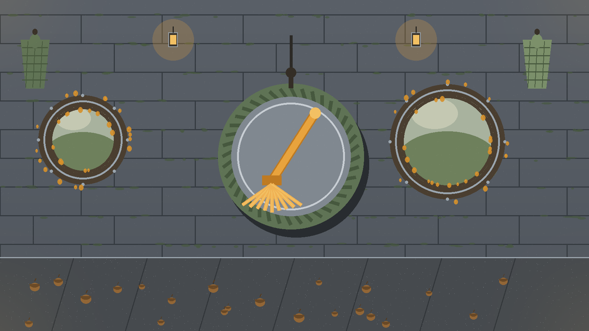
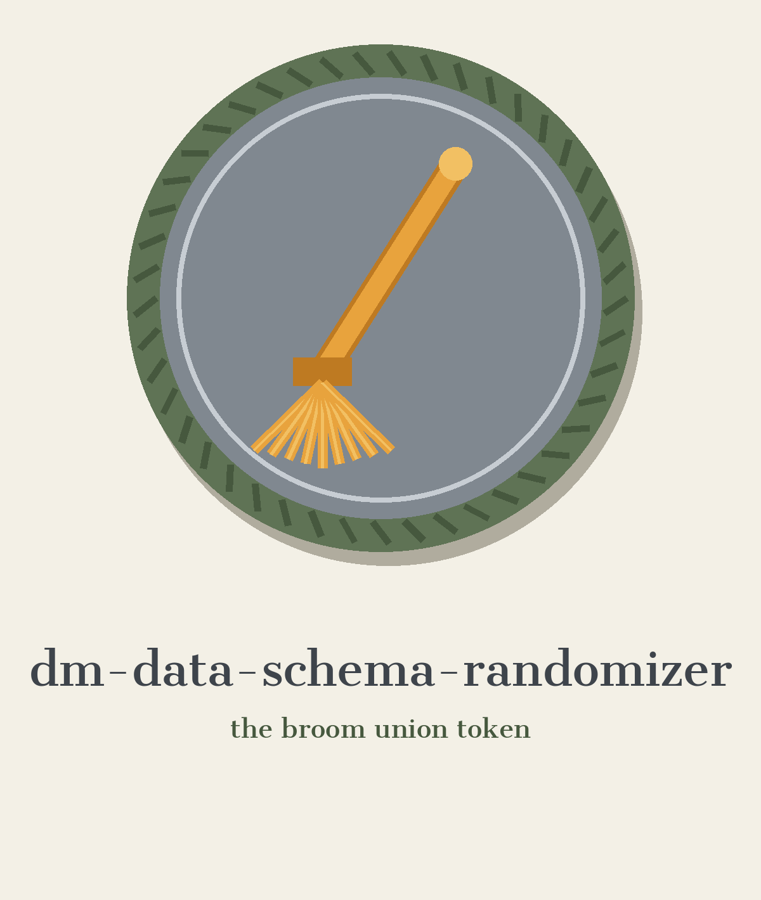
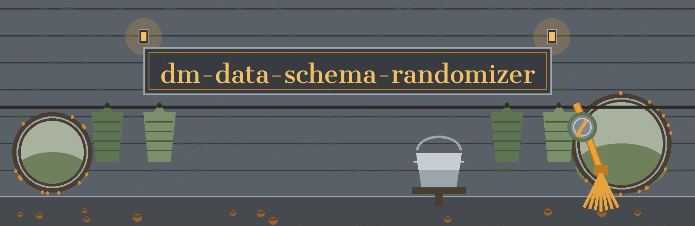

dm-data-schema-randomizer: The Sorcerer's Apprentice Broom Union
Wherever this site names itself, it uses the joined form dm-data-schema-randomizer: The Sorcerer's Apprentice Broom Union, repository first, theme second. The page sits as a meeting under a steward's eye, motion after motion, agenda pinned by the door, in the hall the brooms kept after the flood.


● Agenda marker, in lantern, as it stands on every motion below.
Union Seed
Output Is Never the Input
Controls, All Two of Them
Motion one: the job
Columns in a dataset get renamed at random. Those columns also get reordered, and their data types get changed, all to obfuscate the structure. Data integrity holds within constraints, keeping the dataset usable while its schema is scrambled. The motion closes with the family sentence the README prints, about tools that generate or mask sensitive data with realistic looking but meaningless values. No column name, no type name beyond the general act of changing types, and no value from anyone's dataset appears on this plate or anywhere on this site.
Absence, printed at full size: the README never lists which types a column may receive. No list of permitted type changes stands in the record, and none is invented here.
Absence, printed at full size: the README never lists the constraints that bound the preserving of integrity and usability. No constraint list stands in the record, and none is invented here.
Absence, printed at full size: the README never names a dataset format as read or written. No dataset format stands in the record, and none is invented here.
Motion two: fetching, with one plain repair in the open
git clone https://github.com/ShadowGuard-AI/dm-data-schema-randomizer
The line above is labelled a correction. As printed in the README, that organisation loses its hyphen, so a visitor following the printed address literally arrives at the wrong hall. The corrected line gives the organisation its hyphen and is never passed off as original wording.
Motion three: the invocation, shape only
./dm-data-schema-randomizer [params]
Program first, bracketed parameters after. That shape is all the chair allows. The source publishes no worked call. It names no input file and no output file. Those agenda lines are left blank here on purpose, rather than filled with an invented example.
Motion four: the roster of controls, in README order
Help stands first: -h shows the help message and exits. Then --seed, the random seed for reproducibility. Nobody else stands. The roster is short because the source keeps it short: two controls, all two of them.
Absence, recorded with respect and printed at full size: beside the seed, the README states no default value anywhere. This plate states no default either, and no member invents one from the floor.
Motion five: the output guard, heard at full size
The hall never suspends this standing rule. An output file must not be the input file. Name the same file for both, in any spelling that resolves to the same path, and the run is refused at exit 1 before any write. The rule, the same path test, and the refusal carry their full weight here, exactly as the record carries them.
Motion six: two licence facts, kept apart
Standing first: the repository LICENSE itself, MIT terms. Its holder is described by outline only: a year span, then a pen name in two words, then a bracketed given name cut down to one initial, then a bracketed handle fronted by an at sign. The full holder line is not reproduced on this site.
Standing second, labelled a site correction: the README closing line respelled, giving the organisation its current hyphen where the published line omitted it: Copyright (c) ShadowGuard-AI. That respelling is a correction on this site, not original wording.
Motion seven: the peg wall
A union custom no sibling site copies. Search arrivals hang their question on a peg: renaming, reordering, type changing, seeding, guarding. The steward fetches exactly the cloak answering that question, instead of emptying the whole wall.
Repeatability on your picket sign? Take the seed peg: the seed gives repeatable randomness, and its missing default is confessed in plain language on the seed plate above.
Safety on your picket sign? Take the guard peg: refusal and the same path test spelled out beside a drawing in words of two buckets that must never be poured one into the other.
Provenance on your picket sign? Take the fetching history peg: the unhyphenated spelling stands in the record, and the hyphenated correction is admitted on the fetching plate above.
Apprentices. Dataset keepers. Students scrambling a coursework table before sharing it. Hobbyists reshuffling a games ledger for a friend. Each receives the same courtesy: one cloak, fully shaken out, nothing relevant withheld, nothing extra smuggled in, the peg emptied only when the visitor nods. Lantern light. Damp stone. Bristles drying by the wall.
The hall record, kept verbatim
The live README follows in full, character exact, inside the block below. Its two unhyphenated organisation spellings stand untouched in the record; the repairs live on the plates above, labelled as repairs.
 # dm-data-schema-randomizer Randomly renames, reorders, and changes the data types of columns in a dataset to obfuscate its structure. Preserves data integrity within constraints to maintain usability while scrambling the schema. - Focused on Tools designed to generate or mask sensitive data with realistic-looking but meaningless values ## Install `git clone https://github.com/ShadowGuardAI/dm-data-schema-randomizer` ## Usage `./dm-data-schema-randomizer [params]` ## Parameters - `-h`: Show help message and exit - `--seed`: Random seed for reproducibility. The output file must not be the input file. A run that names the same file for both, in any spelling that resolves to the same path, is refused at exit 1 before any write. ## License Copyright (c) ShadowGuardAI